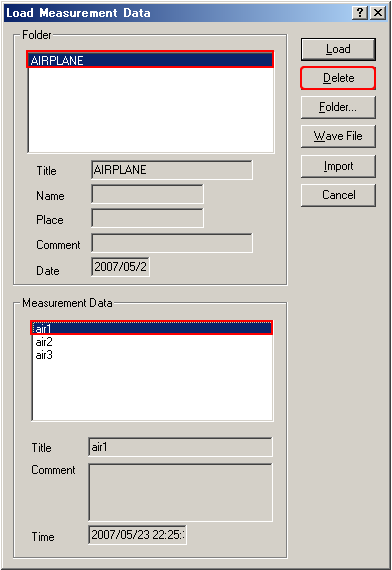
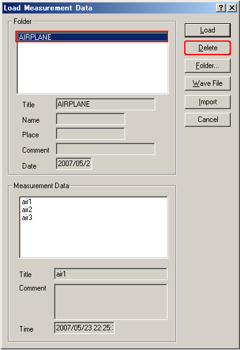

DSSF3 > RA > Running ACF > Measurement guide
Deleting the saved data
Click "Load" button. Folder and Measurement data are displayed. To delete specific data in a specific folder, 1) select the folder and 2) select the data, 3) then click the "Delete" button.

To delete a whole folder, 1) select the folder and 2) click the "Delete" button.

DSSF3 > RA > Running ACF > Measurement guide